Association Rule Mining, or ARM, is a data mining technique that aims to create rules that tell what items of a dataset typically occur together. For example, imagine all the customers at a grocery store and what their shopping carts might look like. What percentage of the customers are buying milk? If someone buys milk, what is the probability that they also buy bread? Is the purchase of these two items correlated?
These are some of the questions that ARM tries to answer. The goal is two create a set of association rules that can give us insight into item cooccurences in a dataset. Rules are defined as relationships between different items in item sets and how often they appear side by side. But how do we determine these association rules?
Three main factors in determining association rules as well as if they are interesting are known as support, confidence, and lift. They are all based on fairly basic probability.
Support for an item is defined as the probability that it appears in a transaction given a total set of transactions. For example, take a set of 10 transactions. If the item $A$ occurs 3 times. Then $supp(A) = P(A) = {{math.fraction("3", "10")}}$, where $P(A)$ is the probability of A. Likewise, imagine the amount of times that the item $A$ and $B$ occur together in transactions. This is represented as the mathematical intersection: $$ supp(A, B) = P(A \cap B). $$
Using the above example, confidence asks a slightly different question. Using the example above: Given that B is in the transaction, what is probability that A is present? This is equivalent to conditional probability: $$ {{math.beginAlign()}} conf(A, B) & = P(B|A) \\\\ & = {{math.fraction("P(A \\cap B)", "P(A)")}} \\\\ & = {{math.fraction("supp(A, B)", "P(A)")}}. {{math.endAlign()}} $$
The discussion of lift is a measure of correlation. The formula is not immediately intuitive, but a discussion of the differences between independent and dependent probability help. There are three key ideas at play: union (P(A U B)), intersection (P(A ∩ B)), and conditional probability (P(A|B)).
When two events are independent, the outcomes do not affect each other at all. When two events are dependent, they do affect each other. There is overlap.
| Independent Probability | Dependent Probability | |
|---|---|---|
| Union: $P(A \cup B)$ | $P(A) + P(B)$ | $P(A) + P(B) - P(A ∩ B)$ |
| Intersection: $P(A \cap B)$ | $P(A) \cdot P(B)$ | $P(A|B) \cdot P(B) = P(B|A) \cdot P(A)$ |
| Conditional: $P(A|B)$ | $P(A)$ | ${{math.fraction("P(A ∩ B)", "P(B)")}}$ |
The equation is equivalent to confidence with the addition of $P(B)$ in the denominator. The interesting bit here comes in the numerator of the lift. If A and B are independent, then the formula becomes $$ {{math.beginAlign()}} lift(A, B) & = {{math.fraction("supp(A, B)", "supp(A) \\cdot supp(B)")}} \\\\ & = {{math.fraction("P(A \\cap B)", "P(A)P(B)")}} \\\\ & = {{math.fraction("P(A)P(B)", "P(A)P(B)")}} \\\\ & = 1. {{math.endAlign()}} $$
We see that a lift of 1 means independent events. If the events are dependent, then the formula is $$ {{math.beginAlign()}} lift(A, B) & = {{math.fraction("supp(A, B)", "supp(A) \\cdot supp(B)")}} \\\\ & = {{math.fraction("P(A \\cap B)", "P(A)P(B)")}} \\\\ & = {{math.fraction("P(A|B) \\cdot P(B)", "P(A)P(B)")}} \\\\ & = {{math.fraction("P(A|B)", "P(A)")}}. {{math.endAlign()}} $$
We see that for dependent events:
How do we determine association rules? One common method is known as the apriori algorithm. It is an iterative approach that starts with single item associations and works up towards multiple items together in associations. Take the image below: 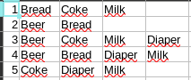
In this list of transactions, we first begin by choosing a minimum support and confidence. Minimum support will be 0.4 and minimum confidence will be 0.6. Then we calculate the support itemset:
Everything is above the support threshold, so now we can move to 2-itemsets. For brevity, we will look at bread and milk being on the left hand side.
Now anything that does not have the minimum support AND confidence can be thrown out. Nothing with those specific combinations needs to be tested again which is from where this algorithm gets its efficiency. We move onto 3-itemsets. Let's look at a few:
We can see that the support and confidence for these rules are valid. It also is true that the lift for each of these rules is greater than 1, so these are association rules to keep in mind. However, let us return our attention to the potential rule {{'{Bread}'}} -> {{'{Milk}'}}.
The support and lift show good signs, but the lift actually shows a negative correlation. If we assume tat we have milk, bread actually becomes less likely. So this is not a good rule.
The apriori algorithm goes through this iterative process to find more and more complex association rules without haviing to test every single combination of different items and different size itemsets.
Association rule mining requires transaction data. Transaction data is a type of unlabeled data where the important aspect is simply having a list of items in a transaction or record. There are no columns, and there are no labels. See the image below: 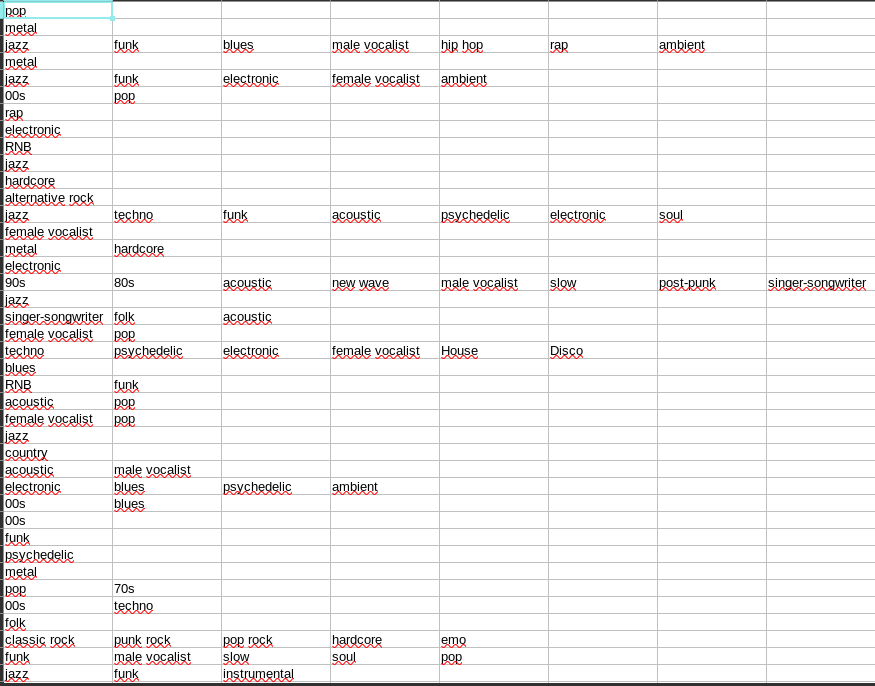
This shows the top 50 tags from the last fm dataset in transaction format. See the data cleaning process.
For ARM, we will use the R programming language. All code can be found here and the data here. The main packages to use are "arules" and "arulesViz". "RColorBrewer" is for aesthetics when plotting and is optional.
library(arules)
library(arulesViz)
library(RColorBrewer)
# Set path
setwd(dirname(rstudioapi::getSourceEditorContext()$path))
song_tags <- arules::read.transactions("./../unsynced-data/lastfm-clean-tags-reduced.csv",
rm.duplicates = FALSE,
format = "basket",
sep=",",
cols=NULL)
# Perform Apriori to get the rules
arm <- arules::apriori(song_tags, parameter = list(support=0.01,
confidence=0.5, minlen=2)) |>
sort(by="confidence")
inspect(arm)
Below is the output of the inspect(arm) command three times. We sort by a different metric each time. Minimum thresholds for support and confidence are set to 0.01 and 0.5, respectively.
Sorted by support:
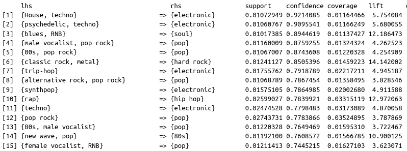
Sorted by confidence:
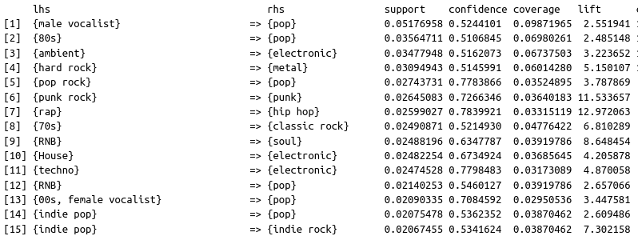
Sorted by lift:
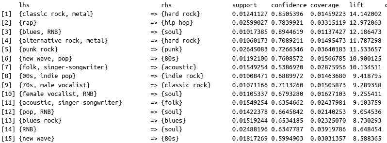
We can additionally visualize this information in a network graph:
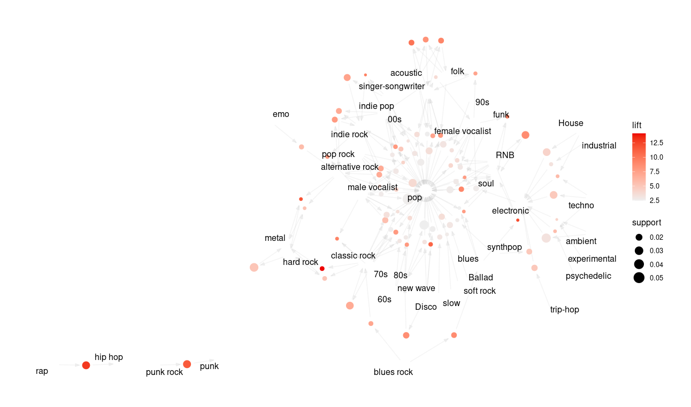
An interesting idea to explore is to explore the differences in associations, if any, between male vocalists and female vocalists. The music industry and even certain music genres have long been dominated by men. Female vocalists may have a harder time breaking into some genres vs others. We can use R to investigate this by specifying a left hand side argument in the code. This time, we will sort by lift:
female_vocalist <- apriori(song_tags,
parameter = list(
support=0.01,
confidence=0.1,
minlen=2),
appearance = list(default="rhs", lhs="female vocalist")) |>
sort(by="lift")
The produced results are below: 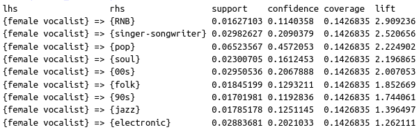
Understanding the metrics in this example:
We can also run the code the other way around. Notice the change to default and rhs in the appearance variable:
female_vocalist <- apriori(song_tags,
parameter = list(
support=0.01,
confidence=0.1,
minlen=2),
appearance = list(default="lhs", rhs="female vocalist")) |>
sort(by="lift")
Results:
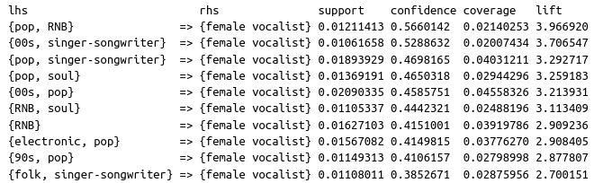
If we run the same code for male vocalists, we get the following:
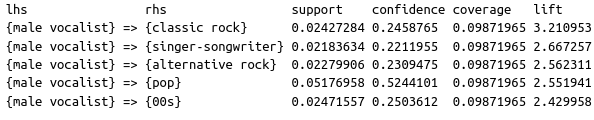
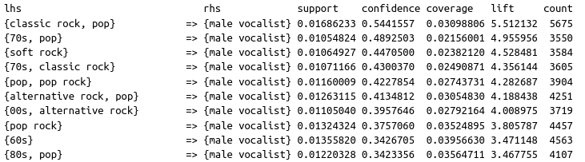
We can also visualize these relationships with a network graph:
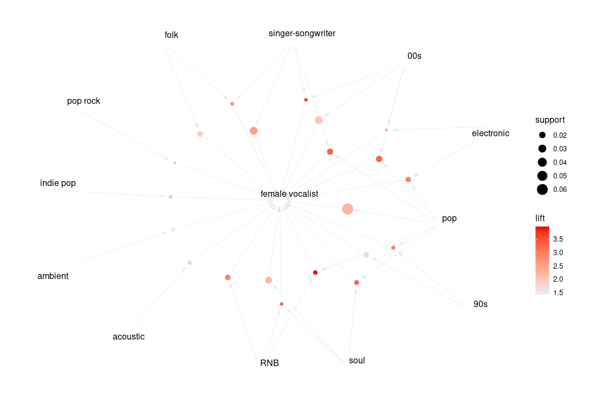
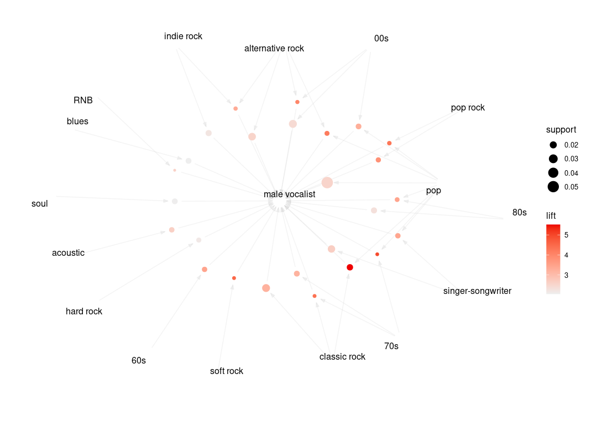
The first set of results about the dataset as a whole gives insight into the types of things that are correlated, and it also gives insight into further genres that could be grouped together. It shows which genres are similar and which are more different. This could also be interpreted as directions for future data cleaning depending on applications. Perhaps house, techno, and electronic could be consolidated. Maybe rap and hip hop could be consolidated. In this instance, it helps to determine not only associations between the tags but also where further cleaning could be performed.
In terms of the female vs male vocalist, it seems that female vocalists are more associated with genres like RNB, pop, soul, and jazz, whereas male vocalists are more associated with genres like rock music. This is largely in line with music history and how dominated heavier music has been by men.